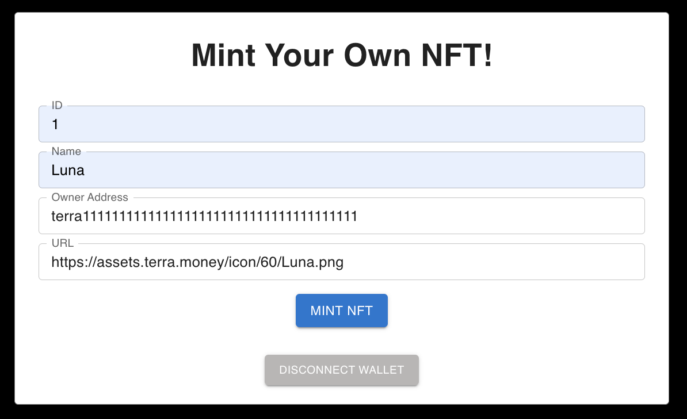

Minting an NFT on the Terra Blockchain#
NFTs, or non-fungible tokens, are unique digital assets that can be showcased, bought, and sold on the blockchain. Purchasing an NFT gives you ownership over the unique digital creation, similar to buying a distinct painting or art piece.
In this tutorial, you will learn how to mint your own NFT using the NFT Terrain application and LocalTerra.
Prerequisites#
16+ gb of RAM
RAM requirements
This tutorial utilizes LocalTerra which requires at least 16gb of RAM to run properly.
1. Create your project#
After installing all the prerequisites listed above, use the following steps to set up your environment and clone the NFT minting repository, which contains the NFT minting smart contract as well as the corresponding front-end application.
Create and enter a new directory for your project:
mkdir my-nft-project cd my-nft-projectClone the
NFT on Terrarepository to your project directory:git clone https://github.com/terran6/nft-on-terra.git
Enter the cloned repository and run
npm installto install all relevant Node dependencies:cd nft-on-terra npm install
After all the dependencies have been installed, you can close this terminal window.
2. Start LocalTerra#
LocalTerra is a complete Terra testnet and ecosystem containerized with Docker. In this tutorial, you will use LocalTerra to simulate transactions in a local testing environment.
After downloading LocalTerra and all its dependencies, open a new terminal window and run the following commands:
cd localterra
docker-compose up
After running LocalTerra successfully, you will start seeing simulated blockchain transactions.
3. Set up your wallet#
In order to use your Terra Station wallet with LocalTerra, you will need to configure your wallet to run on your LocalTerra network.
Open the Terra Station extension in your Google Chrome web browser. Click the gear icon in the upper right corner and change the network from mainnet to localterra.
Click Switch wallet.
Click Preconfigured wallets… and select
test1from the drop-down list.
Now that you have successfully switched to the testing wallet on LocalTerra, you will be able to deploy your smart contract.
4. Update the instantiate message#
Before you can deploy your contract and begin minting your NFT, you’ll need to change the config.terrain.json file in your cloned repository.
In your Terra Station extension, open your
test1wallet and copy the wallet address:
Open the
config.terrain.jsonfile in a code editor and locate the instantiate message section:"instantiateMsg": { "name":"NFT Collection Name", "symbol":"NFTSYMBOL", "minter":"terraxxxxxxxxxxxxxxxxxxxxxxxxxxxxxxxxxxxxxxx" }
Update the
"name","symbol", and"minter"fields with the following information. Make sure to paste yourtest1wallet address under the"minter"field:"instantiateMsg": { "name":"Cryptocurrency Token NFTs", "symbol":"TOKENS", "minter":"Paste your test1 wallet address here" }
Be sure to save the changes to your config.terrain.json file.
5. Deploy your contract to LocalTerra#
You are finally ready to deploy your contract and run the NFT minting application. Make sure you have installed Terrain before proceeding.
Ensure you are still running LocalTerra in a terminal window.
Open a new terminal window and run the following commands to navigate to your cloned repo and deploy your contract using Terrain:
cd my-nft-project/nft-on-terra terrain deploy cw721-metadata-onchain --signer test1
5. Launch the NFT frontend app#
Once the contract deployment is successfully completed, you can run the frontend application to mint your NFT.
Change into the
frontenddirectory and install the node dependencies:cd frontend npm installStart the frontend applicaiton:
npm start
Your chrome browser should open and you should be browsing the frontend application located at http://localhost:3000/ .
Fill out all of the information on the form to mint your first NFT.
ID may be any value that you would like to correspond to the ID of the new NFT.
You can enter any Name for your NFT.
The Owner Address is the wallet address which will be the owner of the newly minted NFT. In this tutorial, this will be your
test1wallet address.Use the following URL for the NFT image of Luna used in this tutorial:
https://assets.terra.money/icon/60/Luna.png

NFT hosting
Most NFT creators host their NFTs using IPFS (Interplanetary File System). There are a variety of resources available to post an NFT on IPFS, such as Pinata. In this example, the image used is available at https://assets.terra.money/icon/60/Luna.png .
{kind=link}
6. Mint your NFT#
Your NFT is ready to mint!
Click Mint NFT. Your Terra Station extension will pop up to request confirmation of the transaction.
Click the Post Button.
After a few seconds, the frontend webpage will display your NFT.
Congratulations, You just minted your first NFT!
View Your New NFT#
Before you can view your NFT, you’ll need to locate your contract address. Open the
refs.terrain.jsonfile located in your cloned repository and copy the contract address listed after"default":{ "localterra": { "cw721-metadata-onchain": { "codeId": "1", "contractAddresses": { "default": "Copy this address" } } } }
You can view your NFT using the Terra Station NFT page. Connect your wallet using the Connect button located in the upper right corner of the screen.
Click Add tokens > located in the middle of the page to open the contract search window. Paste your contract address in the search bar. Click the + button located next to the address of your NFT collection.
Close the search window and you will be presented with information on your NFT collection.
From here, you can View relevant information about your NFT or Send your NFT to any specified wallet address.
Congratulations!#
You have now minted your first NFT on the Terra blockchain! If you have your own unique digital creation that you would like to share with the world, you can follow these instructions using the mainnet network and your personal Terra Station wallet.
Mint NFTs on the mainnet
LocalTerra is not needed for deployments on the mainnet and is primarily used for local testing and development purposes.